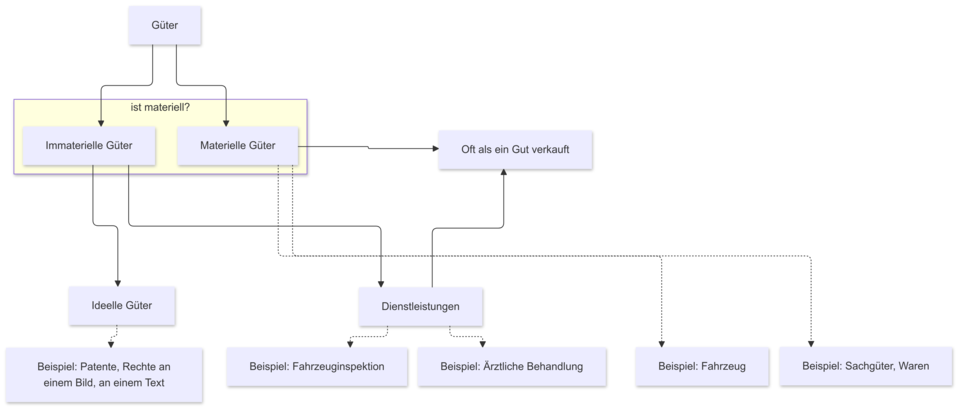

Kapitel 2 Der Gegenstand der Wirtschaft
2.1 Bedürfnisse
Jeder Mensch hat Bedürfnisse, die er durch verschiedenartige Güter befriedigt haben muss oder will. Unter Bedürfnissen versteht man in der Wirtschaftswissenschaft alle körperlichen und geistigen Mangelgefühle, die der Mensch bestrebt ist zu beseitigen. Güter werden in der Wirtschaftswissenschaft sehr weit definiert. Güter sind im umfassenden Sinne alle Mittel oder Leistungen, die der Bedürfnisbefriedigung dienen. Die hohe Anzahl und die Unterschiedlichkeit seiner Bedürfnisse macht es den Menschen unmöglich, alle Güter zu deren Befriedigung selbst herzustellen. Diese Tatsache zwingt die Menschen zur Arbeitsteilung und zum Tausch. Außerdem ändern sich Bedürfnisse in Abhängigkeit von der Entwicklung der Umwelt sehr stark. Diese Veränderung treibt die Entwicklung der Gesellschaft voran.
Bedürfnisse können zunächst unterteilt werden zwei Kategorien, nämlich in Bedürfnisse, die der Mensch befriedigen muss, um seine Existenz zu sichern und Bedürfnisse, die über die Existenzsicherung hinausgehen. Der Mensch braucht zur Existenzsicherung mindestens Nahrung, Kleidung, Wohnung. Diese Bedürfnisse werden Existenzbedürfnisse, Defizitbedürfnisse oder Dringlichkeitsbedürfnisse genannt. Außerdem hat er zahlreiche Wünsche, deren Erfüllung dazu beiträgt, sein Leben angenehm zu gestalten, z.B. zu lesen, zu reisen oder sich künstlerisch zu betätigen. Diese werden unter dem Begriff Kulturbedürfnisse, Wachstumsbedürfnisse oder Luxusbedürfnisse zusammengefasst. Die Grenzen zwischen den Bedürfnisarten sind fließend. Z.B. zählen Kulturtechniken wie Lesen und Schreiben in den meisten Ländern der Erde zu den Existenzbedürfnissen, in Ländern mit einem geringen Bildungsstand allerdings können sie auch heute noch zu den Luxusbedürfnissen zählen.
Eine genauere Einteilung der Bedürfnisse nach fünf Kategorien nahm der amerikanische Psychologe Maslow 1943 vor. Dieses Modell findet bis heute Anwendung insbesondere im Marketing.

Die Maslow-Pyramide (eigentlich: Bedürfnishierarchie) ist ein Modell, das zur Beschreibung der Motivationen von Menschen dient. Die menschlichen Bedürfnisse bilden die “Stufen” der Pyramide. Jede Stufe baut auf der darunterliegenden Stufe auf. Der Mensch versucht zuerst, die Bedürfnisse der unteren Stufe zu befriedigen, bevor er Bedürfnisse der nächsten Stufen wahrnehmen kann und zu befriedigen versucht und so weiter.
Beispiele für die Stufen der Pyramide:
| Bedürfnisse | Beispiele |
|---|---|
| Bedürfnis nach Selbstverwirklichung | Individualität, Talententfaltung, Altruismus, Güte, Kunst |
| Bedürfnis nach sozialer Anerkennung | Status und Statussymbole, Wohlstand, Geld, Macht, berufliche Karriere, sportliche Siege |
| Bedürfnis nach sozialen Beziehungen | Liebe, Partnerschaft, Familie, Freundeskreis, Kollegenkreis |
| Bedürfnis nach Sicherheit | sichere Wohnung, fester Arbeitsplatz, Gesetze, Religion (Lebensregeln und Sanktionen), eine funktionierende Verwaltung, Planbarkeit des Lebens |
2.2 Bedarf
Wenn das Mangelgefühl zur Entscheidung für ein bestimmtes Gut führt, mit dem man das Mangelgefühl beseitigen kann, dann kann man dieses Gut als Bedarf definieren. Unter einem Bedarf versteht man somit ein konkretisiertes Bedürfnis.
Entsprechend der Klassifizierung der Bedürfnisse kann auch der Bedarf nach der Dringlichkeit in Existenzbedarf und Wahlbedarf eingeteilt werden.
Eine zweite Klassifizierung des Bedarfes erfolgt nach der Höhe des benötigten Einkommens. Wenn ein Mensch z.B. Durst hat, dann kann er sich im Normalfall eine Flasche Wasser kaufen. Diese Art Bedarf nennt man Individualbedarf.
Wenn sich ein Einwohner einer Stadt wünscht, in einem attraktiven und sicheren Wohnort zu leben, dann kann er nicht eine Oper, ein Museum, eine U-Bahn und einen Marktplatz mit restaurierten Gebäuden, eine Schule und eine Armee kaufen, da sein Einkommen dazu nicht reicht. Diese Art Bedarf nennt man Kollektivbedarf. Zur Befriedigung des Kollektivbedarfes sind Machtstrukturen nötig, die einerseits Beiträge von vielen Mitgliedern dieser Menschengruppe fordern und andererseits diese Güter dann zur Verfügung stellen. Welche Güter kollektiv zur Verfügung gestellt werden, wie sie finanziert und verteilt werden, ist abhängig von der Umwelt, der Geschichte, den Machtstrukturen der Menschengruppe usw.
Die Kriterien dieser zwei Gruppen von Bedürfnisse ist nicht so präzis, weil es auch Möglichkeit gibt, dass Bedürfnisse, die hohe benötigte Einkommen braucht, auch zur Individualbedarf gehört, wie zum Beispiel, eine treuer Operation von ein Millionär. Deswegen sollten wir die Kriterien verändern.(wie nach der Nutznießergruppe)
Der Bedarf kann drittens danach klassifiziert werden, wer ihn befriedigt. Wenn alle Wirtschaftssubjekte in zwei Gruppen eingeteilt werden können: Haushalte und Unternehmen, dann produzieren Haushalte per Definition zur Befriedigung des Eigenbedarfes und Unternehmen zur Befriedigung des Fremdbedarfes.
2.3 Nachfrage
Unter zwei Voraussetzungen wird der Bedarf schließlich zur Nachfrage. Erstens, wenn der Nachfrager infolge eines Tausch- oder Kaufentschlusses auf einem Markt auftritt und auf ein Angebot hofft. Das heißt, wenn der Bedarf marktwirksam wird. Nachfrage ist immer das Auftreten auf einem Markt. Die zweite Voraussetzung besteht darin, dass der Nachfrager bereit ist, eine bestimmte Menge Tauschgut einzusetzen oder einen Preis für seine Bedürfnisbefriedigung zu bezahlen, wenn er also über Kaufkraft bzw. über ein bestimmtes Einkommen verfügt.
2.4 Güter
Das Objekt der Verteilung sind Güter. Die Eigenschaft des Gutes haftet einem Gegenstand nicht von Natur aus an. Als Gut bezeichnet man in der Wirtschaftswissenschaft alle Mittel oder Leistungen, die der Bedürfnisbefriedigung dienen. (Siehe oben) Das Fachwort ist zentrales Element in der Wissenschaftssprache der Wirtschaftswissenschaften und hat einen großen Bedeutungsumfang. Als “Gut” wird de facto alles erfasst, was irgendeinem Wirtschaftsakteur irgendeinen Nutzen stiftet. Da alles, philosophisch gesehen, irgendeinen Nutzen hat, kann somit alles zum Gut werden. Güter, die aus der Sicht des Betrachters unerwünscht sind, wie z.B. Luftverschmutzung, Lärm, eine Krankheit, werden als “Schlecht” (Ungut oder Bad) bezeichnet.
Ebenso wie Bedürfnisse und der Bedarf können auch Güter nach der Dringlichkeit in Existenzgüter und Luxusgüter eingeteilt werden. Dieser Klassifikation liegt allerdings ein eindeutiges mathematisches Kriterium zugrunde. Diese Klassifikation wird in der Lektion “Elastizität” dargestellt.
Güter werden entsprechend den Bedürfnissen der unterschiedlichen Teilgebiete der Wirtschaftswissenschaften außerdem nach vielen anderen Kriterien klassifiziert. Das folgende Beispiel zeigt das formale Vorgehen bei Klassifizierungen am Beispiel eines Apfels.
Gegenstand der Klassifizierung: Apfel
| Kriterium oder Merkmal | Merkmalsausprägung | Wer hat ein Interesse an dieser Klassifizierung? |
|---|---|---|
| Farbe | rot, gelb, grün | ein Maler |
| Geschmack | süß, sauer | ein Bäcker |
| Reifegrad | reif, unreif | ein Koch(ein Verkäufer:in) |
| Graumen | knackig,nicht knackig | eine Kunde |
| Herstellungsort | Europa, Asien | eine Kunde |
| Verwendungszweck | essen, Alkohol produzieren | ein Hersteller |
Güterklassifikationen tauchen im realen Alltag in vielen Formen auf. Wenn man sich z.B. in einem Supermarkt umschaut, so kann man sehen, dass Güter nach verschiedenen Zwecken gruppiert werden. Aus Gründen der Übersichtlichkeit teilt man Güter in Nahrungsmittelgruppen ein: Obst, Gemüse, Getränke, Fleisch, Käse, Backwaren usw. Aufgrund ihrer Lagereigenschaften findet man Güter, die gekühlt werden müssen, im Kühlregal, andere nicht. Güter, die eine hohe Gewinnspanne versprechen, werden in Augenhöhe oder in der Nähe der Kasse präsentiert, andere ganz unten oder ganz oben usw.
Im Folgenden sollen Güterklassifikationen dargestellt werden, die für die wirtschaftswissenschaftliche Betrachtung von Gütern eine Bedeutung haben.
2.4.1 Knappheit
In der Allgemeinen Volkswirtschaftslehre ist die Unterscheidung von freien und knappen Gütern von hoher Bedeutung. Ein Gut ist frei, wenn es in einem bestimmten Gebiet zu einer bestimmten Zeit in so großer Menge vorhanden ist, dass jeder Nachfrager so viele Einheiten des Gutes konsumieren kann, wie er will, bzw. bis seine Sättigungsgrenze erreicht ist. Bei freien Gütern ist also das Angebot größer als die Nachfrage. Typische Beispiele dafür sind Güter, die uns die Natur schenkt, wie die Luft zum Atmen, Sonnenlicht oder Sand in der Wüste. Da freie Güter in einem ausreichenden Maße zur Verfügung stehen, haben sie keinen Preis.
Im Gegensatz dazu stehen knappe Güter nicht in einem ausreichenden Maße zur Verfügung. Knappheit ist relativ. Sie bedeutet nicht absolute Seltenheit (eine kleine Menge oder nur ein Exemplar) wie z.B. ein komplettes Saurierskelett, sondern sie beschreibt nur das Verhältnis von Angebots- und Nachfragemenge. Wenn die Nachfragemenge größer als die Angebotsmenge ist, dann handelt es sich um ein knappes Gut. Bei knappen Gütern müssen Nachfrage und Angebot durch Wirtschaft zum Ausgleich gebracht werden. Aus diesem Grund nennt man diese Art von Gütern wirtschaftliche Güter. Sie haben einen Preis. Je knapper ein Gut ist, desto höher ist sein Preis, d.h., wenn bei gleichbleibendem Angebot die Zahl der Nachfrager oder die nachgefragte Menge steigt, steigt auch der Preis. Der Preis ist damit Indikator für die Knappheit des Gutes.
Güter, die ursprünglich als frei betrachtet wurden, können aus verschiedenen Gründen knapp werden. Zum Beispiel:
- durch die Umweltverschmutzung oder Übernutzung
- durch die Schaffung von Eigentumsrechten
- allerdings auch durch Veränderungen der Umweltbedingungen, die der Mensch nicht beziehungsweise nicht direkt verursacht hat, z.B. Naturkatastrophen.
2.4.2 Gegenständlichkeit
Man unterscheidet in der wirtschaftswissenschaftlichen Fachsprache materielle Güter (auch Sachgüter, Waren) und immaterielle Güter. Letztere lassen sich wiederum unterteilen in Dienstleistungen (z.B. ärztliche Behandlung) und ideelle Güter (z.B. Patente, Rechte an einem Bild, an einem Text). Auch hier ist der Übergang fließend. Ein Fahrzeug ist zweifelsfrei ein Sachgut, wogegen eine Fahrzeuginspektion eine Dienstleistung ist, beides aber oft als ein Gut verkauft wird.
2.4.2Ü1 Fertigen Sie eine Grafik zur Struktur des oberen Textes an.

Typische Dienstleistungen unterscheiden sich aufgrund folgender Eigenschaften von materiellen Gütern:
- Sie sind nicht lagerbar.
- Sie können nicht als Eigentum erworben werden.
- Produktion und Konsum erfolgen zur gleichen Zeit, also unmittelbar.
- Sie können nicht als Wertspeicher genutzt werden.
Diese Klassifizierung zeigt ein Definitionsproblem auf. Der Begriff “Gut” bedeutet in der Allgemeinsprache ein materielles Gut, auch “Besitz”. In der Fachsprache der Wirtschaftswissenschaft versteht man unter einem Gut alles, was Bedürfnisse befriedigen kann. Der Bedeutungsumfang des Begriffes ist in der Fachsprache also viel größer als in der Allgemeinsprache.
2.4.3 Verwendungszweck und Nutzungsdauer
2.4.3.1 Verwendungszweck
Diese Unterscheidung ist von allgemeinem wirtschaftlichem Interesse und basiert auf dem Modell des einfachen Wirtschaftskreislauf. Unterschieden werden Konsumgüter und Produktionsgüter. Konsumgüter werden zum Zwecke des Konsums, somit der letzten Nutzung im Wirtschaftskreislauf, nachgefragt, Produktionsgüter dagegen zum Zwecke der Produktion. Die Nachfrager werden nach diesem Kriterium unterschieden in private Haushalte (fragen Konsumgüter nach) und Unternehmen (fragen hauptsächlich Produktionsgüter nach). Konsumgüter dienen der unmittelbaren Bedürfnisbefriedigung, Produktionsgüter dagegen der Produktion von Konsumgütern und somit nur der mittelbaren Bedürfnisbefriedigung.
Das Modell vom einfachen Wirtschaftskreislauf
2.4.3.2 Nutzungsdauer
Man unterscheidet hier langfristig(dauerhaft) und kurzfristig(nicht dauerhaft) nutzbare Güter. Güter, die über einen längeren Zeitraum genutzt werden können, sind Gebrauchsgüter. Güter, die nur kurzzeitig verwendet werden können oder Güter, die nur einmal eingesetzt werden können und bei der Benutzung untergehen, sind Verbrauchsgüter.
Im Haushalt, also in der Verwendung als Konsumgut, spielt diese Klassifikation keine Rolle. Für Produktionsgüter ist diese Klassifikation allerdings sehr wichtig. Sie spielt in der Betriebswirtschaftslehre, besonders dem Rechnungswesen, eine entscheidende Rolle. Gebrauchsgüter sind Güter, die dauerhaft im Unternehmen Verwendung finden sollen. Das sind beispielsweise Gebäude, Maschinen und Fahrzeuge. Sie werden auch Investitionsgüter genannt und werden im Anlagevermögen in der Bilanz erfasst. Ihr Wert wird über ihre geplante Nutzungsdauer hinweg abgeschrieben. Verbrauchsgüter sind Güter, die durch die Produktion in ein neues Produkt eingehen oder für die Produktion benötigt werden. Wenn sie lagerbar sind, werden sie im Umlaufvermögen in der Bilanz erfasst. Wenn sie nicht lagerbar sind, also wenn sie sofort verbraucht oder eingesetzt werden müssen, zählen sie zum Aufwand und erscheinen nicht in der Bilanz.
Da auch hier Übergänge fließend sind, werden im Rechnungswesen zwei Vereinfachungen vorgenommen. Als Verbrauchsgüter gelten über die obere Definition hinaus alle Güter, die weniger als ein Jahr lang nutzbar sind, und alle Güter, die weniger als 150 € netto (ohne Umsatzsteuer) gekostet haben. Diese Güter werden sofort als aufwand betrachtet und sie müssen nicht abgeschrieben werden, auch wenn man sie lange im Unternehmen einsetzen kann.
Das Kriterium der “Nutzungsdauer” spiegeln sich auf der Aktivseite und auf der Passivseite der Bilanz wider, als Beispiel ist eine stark vereinfachte Übungsbilanz zu sehen:
Bilanz zum 31.12.01
| Aktiva | Passiva | ||
|---|---|---|---|
| Anlagevermögen(AV) | Eigenkapital(EK) | ||
| Grundstücke und Gebäude | \(50.000\) | ||
| Maschinen und Anlagen | \(10.000\) | ||
| Fahrzeuge | \(20.000\) | ||
| Betriebs- und Geschäftsausstattung(BGA) | \(3.000\) | ||
| Umlaufvermögen(UV) | Fremdkapital(FK) | ||
| Roh-, Hilfs-, Betriebsstoffe(RHB) | \(7.000\) | Darlehensverbindlichkeiten(DV) | \(40.000\) |
| Waren | \(8.000\) | Verbindlichkeiten aus Lieferungen und Leistungen(Verb LuL) | \(5.000\) |
| Forderungen aus Lieferung und Leistungen(Ford LuL) | \(2.000\) | ||
| Bank | \(4.000\) | ||
| Kasse | \(800\) | ||
| Bilanzsumme | Bilanzsumme |
Versuchen Sie biite, die richtige Auswahl oben zu wählen
Prinzipiell kann man für die Aktivseite sagen, je weiter oben der Posten in der Bilanz steht, desto höher ist die geplante Nutzungsdauer und desto niedriger ist die Liquidität des Postens. Die Kasse ist also bereits liquide, wogegen es sehr viel länger dauert, ein Gebäude oder ein Fahrzeug zu verkaufen, bis das Unternehmen wieder liquide ist.
Für die Passivseite gilt, je weiter oben der Posten steht, desto höher ist die Fristigkeit des Kapitals, d.h., desto länger soll der Posten im Unternehmen verbleiben. Das Eigenkapital soll über die gesamte Lebensdauer (Totalperiode) im Unternehmen sein, die Darlehensverbindlichkeiten laufen je nach Kreditvertrag einige Jahre und eine Verbindlichkeit aus Lieferungen und Leistungen/ Lieferantenverbindlichkeit besteht je nach Liefervertrag einige Wochen, bis sie fällig ist. Dabei werden die Darlehensverbindlichkeiten verzinst, Lieferantenverbindlichkeiten im Normalfall nicht.
Die Passivseite liefert Informationen darüber, woher das Kapital im Unternehmen kommt (Kapitalherkunft) und die Aktivseite darüber, wofür das Kapital verwendet wurde (Kapitalverwendung). Die Reihenfolge der Bilanzposten ist gesetzlich vorgeschrieben im § 266 HGB. Deshalb darf die Reihenfolge auch in der Übungsbilanz nicht variiert werden. Das EK ist nur bei Unternehmensgründung eine bestimmte Geldmenge, die dazu eingesetzt wird, um AV und UV zu kaufen. Später kann das EK nur noch als Differenz betrachtet werden, die sich aus folgender Berechnung ergibt: \(\text{AV} + \text{UV} - \text{FK} = \text{EK}\). Die Bilanzsummen sind also auf beiden Seiten immer gleich groß. In den Buchungsübungen ist es erlaubt und erwünscht, Abkürzungen zu verwenden. Beide Kriterien können in Tabellenform dargestellt werden:
| Nutzungsdauer\Verwendungszweck | für Produktion | für Konsum |
|---|---|---|
| langfristig | Investitionsgut | Gebrauchsgut |
| kurzfristig | Roh-, Hilfs-, Betriebsstoffe | Verbrauchsgut |
2.4.4 Nutzen für den Konsumenten / Nachfrager
Unterschieden werden nur drei Merkmalsausprägungen: das Gut hat einen Nutzen für den Konsumenten (Good), das Gut ist neutral, es hat keinen Nutzen und verursacht keinen Schaden (neutrales Gut) und das Gut ist schädlich für den Konsumenten (Ungut oder Bad).
Die Höhe des Nutzens kann als Funktion der Nachfragemenge dargestellt werden. Dabei bedient sich die Wirtschaftswissenschaft der Sprache der Mathematik. Es wird ein funktionaler Zusammenhang zwischen einer unabhängigen Größe = Abszisse = x-Achse und einer abhängigen Größe = Ordinate = y-Achse dargestellt und der funktionale Zusammenhang kann berechnet werden. Das Ergebnis ist die Nutzenfunktion, die in der Haushaltstheorie näher analysiert wird. Mit dem Verlauf der Funktionen können Güter klassifiziert werden. Die Klassifikation spielt eine große Rolle in der Mikroökonomik.
Beispiele: Ein Gut (Good) ist für einen Kaffeetrinker Kaffee, ein neutrales Gut für einen Kaffeetrinker ist z.B. Tee. Der Kaffeetrinker fragt keinen Tee nach und erleidet normalerweise keinen Schaden durch einen Teetrinker. Ein Bad für einen Nichtraucher ist z.B. Zigarettenrauch, ein Bad für einen Stille liebenden Menschen kann laute Musik sein.
2.4.5 Substituierbarkeit
Eine Unterscheidung, die ebenfalls in der Mikroökonomik eine große Rolle spielt, ist die Klassifizierung der Güter danach, ob sie für den Nachfrager als gleichartig (homogene Güter) betrachtet werden oder nicht (heterogene Güter). Heterogene Güter betrachtet der Nachfrager dann also als verschiedenartige Güter. Die Klassifikation erfolgt immer aus der Sicht des Nachfragers. Zwei Güter können objektiv unterschiedlich (Größe, Zweck, Qualität, Service) oder subjektiv unterschiedlich sein. Dann handelt es sich um die gleichen Güter, aber z.B. wird eines als Markenprodukt, das andere als No-name-Produkt verkauft. Aber auch vollkommen gleichartige Güter können von einem Nachfrager als heterogen wahrgenommen werden. Ein Beispiel dafür ist ein Buch in einem Bücherstapel eines Buchladens. Welches würden Sie kaufen?
Es handelt sich also um eine subjektive Entscheidung des Nachfragers, ob zwei Güter für ihn homogen oder heterogen sind. Wenn er zwei Güter als heterogen betrachtet, sind sie für ihn nicht beliebig austauschbar (substituierbar). Das mindert den Wettbewerb zwischen den Anbietern. Deshalb sind Anbieter austauschbarer Produkte immer bestrebt, die Unterschiede ihres Angebotes von dem der Konkurrenten sehr deutlich zu kommunizieren, damit die Konsumenten eine möglichst hohe Produkttreue entwickeln.
Homogene Güter sind für den Nachfrager dagegen vollkommen austauschbar. Objektive als auch subjektive Produktunterschiede sind für den Kunden nicht relevant. Die Kaufentscheidung wird allein durch den Preis bestimmt. Aufgrund dieser Bedingung sind homogene Güter de facto nur Teil eines Marktmodells, dem vollkommenen Markt. Reale Güter, die am ehesten als Beispiele für homogene Güter gelten können, sind z.B. Elektroenergie, verschiedene Aktien eines Unternehmens, Banknoten der gleichen Währung oder in Deutschland Bananen.
Von der Substituierbarkeit eines Gutes ist abhängig, auf welchem Markt der Nachfrager auf-tritt. Wenn der Nachfrager “Jeans” kaufen möchte, dann ist er Nachfrager auf einem Jeansmarkt. Es gibt viele Anbieter für Jeans, der Markt ist ein Polypolmarkt (viele Nachfrager, viele Anbieter). Wenn der Nachfrager “Levis” kaufen möchte, dann ist er Nachfrager auf dem “Levismarkt”, also auf einem Monopolmarkt (viele Nachfrager, ein Anbieter). Für diesen Nachfrager sind andere Jeans nicht gleichartig, also nicht substituierbar. Diese Unterscheidung ist wichtig für die Charakterisierung der Marktformen in der Mikroökonomik.
2.4.6 Nachfragerverhalten
Die Nachfrage nach einem bestimmten Gut ist nicht nur abhängig vom Preis des Gutes, sondern von sehr vielen Faktoren wie Alter des Nachfragers, Geschlecht, Bildungsstand, Familienstand, familiärer Hintergrund, Arbeitsplatz, Anzahl der Kinder usw. Diese Einflüsse auf das Nachfragerverhalten sind Gegenstand der Psychologie bzw. psychologischer Betrachtungen innerhalb der Wirtschaftswissenschaften wie etwa im Marketing oder in der Finanzierung.
In der Mikroökonomik werden folgende Zusammenhänge in den Mittelpunkt der Analyse gestellt: der funktionale Zusammenhang:
- zwischen dem Preis des Gutes und der nachgefragten Menge des Gutes
- zwischen dem Preis anderer Güter und der nachgefragten Menge des Gutes
- zwischen dem Einkommen des Nachfragers und der nachgefragten Menge des Gutes.
2.4.6.1 Der Zusammenhang zwischen dem Preis des Gutes und der Nachfrage/ Nachfragemenge des Gutes
Empirisch nachvollziehbar ist der Zusammenhang, der auch als Gesetz der Nachfrage oder normale Nachfrage bezeichnet wird: Wenn der Preis des Gutes hoch ist, ist die Nachfrage gering und wenn der Preis des Gutes niedrig ist, ist die Nachfrage hoch. Das heißt, wenn der Preis des Gutes steigt, sinkt die Nachfrage und wenn der Preis des Gutes sinkt, steigt die Nachfrage. Es handelt sich hierbei um eine normale Nachfragefunktion, die Güter sind normale Güter. Die unabhängige Größe ist der Preis, die abhängige Größe die Menge. In der grafischen Darstellung werden die beiden Achsen jedoch üblicherweise vertauscht. Das ist mathematisch unkorrekt.
Beispiel: Ein Händler hat beobachtet, dass er bei einem Preis von 1 € pro kg eines Gutes 4 kg verkauft hat, bei einem Preis von 5 € pro kg dagegen verkaufte er nur 2 kg. Stellen Sie diese zwei Preis-Mengen-Kombinationen in einem mathematisch korrekten Preis-Mengen-Diagramm dar. (Maßstab: 1 € und 1 kg entsprechen 1 cm).
Mathematische Darstellung:
Ökonomische Darstellung:
Berechnung einer linearen Nachfragefunktion bei zwei gegebenen Punkten:
Zu beobachten sind in der Realität jedoch auch andere Verläufe der Nachfragefunktionen: Wenn der Preis eines Gutes steigt, die Nachfrage jedoch konstant bleibt, bezeichnet man die Nachfrage nach diesen Gütern als unelastisch, auch unelastische Nachfrage, das Gut nennt man vollkommen unelastisches Gut. Dieser Effekt ist ein Modellfall, kann aber in bestimmten Preisbereichen bei lebensnotwendigen Gütern auftreten. Die Nachfrager sind z.B. bei einem lebensrettenden Medikament gezwungen, jeden Preis für das Gut zu zahlen, den der Anbieter verlangt.
Wenn der Preis eines Gutes und auch die Nachfrage steigen, so handelt es sich um eine anomale Nachfrage. Das Gut mit einer anomalen Nachfrage wird manchmal nur nach einem Erklärungsansatz “Giffengut” genannt.
Es gibt dafür unterschiedliche Erklärungsansätze, von denen hier einige vorgestellt werden sollen:
Qualitätsvermutungseffekt
Steigende Nachfrage bei steigendem Preis kann in der Vermutung begründet sein, dass sich die Qualität des Gutes verbessert hat und deshalb mehr nachgefragt wird. Das ist möglich bei Gütern, deren Qualität erst nach dem Kauf eingeschätzt werden kann.
Snob-Effekt
Steigende Preise sind eine Möglichkeit, anderen Menschen das eigene hohe Einkommen und die Unabhängigkeit von steigenden Preisen zu demonstrieren. Bei steigendem Preis wird also mehr von diesem Gut (deutlich sichtbar) konsumiert. Der Effekt kann bei Luxusgütern auftreten.
Giffen-Effekt
Der Effekt wurde im 19. Jh. von dem englischen Ökonomen Giffen beschrieben. Der Brot-preis stieg und die Leute mussten mehr Brot nachfragen, weil sie sich “bessere” Güter wie z.B. Fleisch nicht mehr leisten konnten. Dieser Effekt kann bei extremen Existenzgütern auftreten.
Kleinanlegereffekt
Bei steigenden Aktienpreisen an der Börse (Kursen) versuchen insbesondere Anleger mit wenig Markteinfluss, mit steigenden Aktien Gewinn zu machen. Sie kaufen oft zu spät, nämlich dann, wenn die Preise schon stark gestiegen sind.
Inflationseffekt
Wenn die Nachfrager infolge einer Inflation steigende Preise erwarten, ziehen sie ihren Konsum trotz steigender Preise jetzt vor, um später nicht noch mehr dafür bezahlen zu müssen.Der Effekt kann bei lagerfähigen Gütern oder Gebrauchsgütern auftreten.
2.4.6.2 Der Zusammenhang zwischen dem Preis eines anderen Gutes und der Nachfragemenge des betrachteten Gutes
Auch hier werden im Wesentlichen drei Fälle unterschieden: Wenn der Konsum von Gütern in typischen Situationen nur als Gemeinsamkeit sinnvoll ist, handelt es sich um Komplementärgüter (Komplemente / komplementäre Güter). Steigt der Preis des einen Gutes, dann sinkt die Nachfrage nach beiden Gütern. Es lassen sich verschiedene Grade unterscheiden. Bei perfekten Komplementen ist der Kauf eines Gutes ohne Kauf des anderen Gutes sinnlos, z.B. linker und rechter Schuh. Unvollständige Komplemente ergänzen sich im Konsum, können aber auch zu unterschiedlichen Zeiten am Markt nachgefragt werden oder in unterschiedlichen Mengen kombiniert werden. Eine Preissteigerung bei Gut 1 wirkt sich dann mit einer Verzögerung auf die Nachfrage des Gutes 2 aus, z.B. Computer, Drucker, Monitor oder Auto und Benzin.
Substitutionsgüter (Substitute / substitutive / substitutionale Güter) zeichnen sich dadurch aus, dass sie aus der Sicht des Nachfragers ähnliche oder sogar dieselben Bedürfnisse befriedigen und damit miteinander im Wettbewerb stehen. Für den Nachfrager sind sie homogen oder zumindest weniger heterogen. Folglich steigt bei einem Substitutionsgut die Nachfrage, wenn sich der Preis des anderen Gutes erhöht.
Auch hier lassen sich verschiedene Grade unterscheiden. Kann ein Gut das andere vollständig ersetzen, ohne dass zusätzliche Kosten entstehen, spricht man von perfekten Substituten (also homogenen Gütern). Z.B. kann es dem Nachfrager vollkommen gleichgültig sein, ob er seine Zeichnungen mit einem roten oder blauen Bleistift anfertigt. Wenn der Preis von roten Bleistiften auch nur gering steigt, kauft der Nachfrager nur noch blaue. Kann ein Gut ein anderes bei der Befriedigung eines Bedürfnisses nur unvollkommen ersetzten, so spricht man von unvollkommenen Substituten. Bei kleinen Preisveränderungen werden sich die Konsumgewohnheiten des Nachfragers nicht ändern, wenn jedoch die Preisänderungen hinreichend groß sind, wird der Nachfrager das Gut durch ein anderes Gut, ein Substitut, ersetzen, z.B. bewirkt die starke Erhöhung des Benzinpreises, dass mehr Menschen mit der Bahn fahren.
Wenn eine Preisveränderung bei einem Gut keinerlei Nachfrageveränderung bei einem anderen Gut hervorruft, so existieren keine Konsumbeziehungen zwischen beiden Gütern. Diese Güter verhalten sich indifferent zueinander, man nennt sie indifferente Güter.
2.4.6.3 Der Zusammenhang zwischen dem Einkommen des Nachfragers und der Nachfragemenge des Gutes
Zu erwarten ist der Fall, dass die Nachfrage nach dem Gut steigt, wenn das Einkommen steigt. Diese Güter befinden sich im superioren Bereich der Nachfragefunktion, auch (absolut) superiore Güter. Unterschieden werden können relativ superiore Güter und relativ inferiore Güter. Bei relativ superioren Gütern steigt die Nachfrage schneller als das Einkommen, bei relativ inferioren Gütern steigt die Nachfrage langsamer als das Einkommen. Das ist typisch für normale Nahrungsmittel und die Kennzahl dient dazu, den Wohlstand eines Landes zu beschreiben (Engelkoeffizient). Wenn die Nachfrage bei steigendem Einkommen bis zu einer bestimmten Sättigungsmenge steigt und dann auf diesem Niveau bleibt, spricht man von einer gesättigten Nachfrage (oder von Sättigungsgütern). Wenn die Nachfrage bei weiter steigendem Einkommen sinkt, das Gut also vermutlich durch ein “besseres” substituiert wird, dann befindet sich das Gut im inferioren Bereich, auch (absolut) inferiore Güter. Die Klassifikation dieser Güter wird in den Lehrbüchern unterschiedlich dargestellt. Ein Beispiel für ein typisches Sättigungsgut ist Salz. Jeder Mensch benötigt eine bestimmte Menge, unabhängig vom Einkommen. Typische Beispiele für inferiore Güter sind Güter, die man mit einem niedrigen oder mittleren Einkommen kauft, bei einem höheren Einkommen jedoch nicht mehr, z.B. Bekleidung von H&M, Primark.
2.4.7 Ausschließbarkeit und Rivalität
Die folgenden drei Klassifikationsansätze nach den Kriterien Ausschließbarkeit, Rivalität und Wohlfahrtswirkung beschäftigen sich mit der grundlegenden Frage “Markt oder Staat?”, d.h., ob diese Güter über einen Markt verteilt werden können oder ob ihre Verteilung durch eine übergeordnete Instanz organisiert werden muss. Dabei kann es sich um einen Diktator, eine Regierung, ein Parlament oder Ähnliches handeln, wir nennen diese sehr stark verkürzt “Staat”. Diese Klassifikationen spielen in der Finanzwissenschaft eine bedeutende Rolle.
Bei diesen Kriterien geht es um die Art der Verteilung. Güter können auf verschiedene Arten verteilt werden. Wir wollen hier nur drei Gruppen unterscheiden:
- Anarchie
- Verteilung durch einen übergeordneten Willen(willkürlich oder nach bestimmten Regeln), sehr kurz und vereinfachend: Staat
- Verteilung durch das freie Spiel von Angebot und Nachfrage innerhalb eines mehr oder weniger geschützten Rahmens, aber ohne eine übergeordnete Instanz, kurz: Markt.
Eine grundlegende Frage der Finanzwissenschaft ist, ob die Güter über einen Markt verteilt werden können (Sind die Güter marktfähig?) oder ob die Verteilung durch den Staat zu einem besseren Ergebnis führt (Markt oder Staat?). Die Antwort ist unter anderem davon abhängig, um welche Art von Gütern es sich handelt und welche Bedürfnisstruktur die betrachtete Menschengruppe hat. Es gibt keine Gesellschaftsform, die Güter nur durch eine Verteilungsmethode verteilt. Die Geschichte hat gezeigt, dass Verteilungen durch übergeordnete Instanzen vorgenommen wurden, wenn Märkte zusammengebrochen sind oder zu nicht optimalen Verteilungen führten und dass sich trotz staatlicher Regulierung Märkte entwickelten, die andere Verteilungsergebnisse erzielten, als der Staat wünschte, z.B. Schwarzmärkte.
2.4.7.1 Ausschließbarkeit
Güter können in ausschließbare und in nicht ausschließbare Güter eingeteilt werden. Ein Gut ist ausschließbar, wenn ein Wirtschaftsakteur alle anderen daran hindern kann, das Gut zu konsumieren. Die Nutzung dieses Gutes ist nur möglich, wenn ein bestimmter Preis an den Besitzer oder Anbieter des Gutes gezahlt wird. Die Ausschließbarkeit eines Gutes ist u.a. abhängig von technologischen Eigenschaften des Gutes, von den Kosten des Ausschlusses, von den vorherrschenden Eigentumsverhältnissen.
| ausschließbar | Brötchen, Möbel in der eigenen Wohnung, Kinobesuch |
| Übergang | Open-Air-Konzert |
| nicht ausschließbar | Landesverteidigung, Deich |
| früher nicht ausschließbar, heute ausschließbar | Fernsehempfang (Pay-TV) |
Der Marktmechanismus funktioniert nur bei ausschließbaren Gütern. Wenn man nicht aus-schließbare Güter versuchen würde, über einen Markt zu verteilen, dann würden die meisten Wirtschaftsakteure darauf vertrauen, dass andere dieses Gut dringender benötigen und bereit sind, die Kosten für ihre Bereitstellung zu tragen, und dass sie das Gut auch konsumieren können, ohne einen Preis dafür zu zahlen, da sie von der Nutzung des Gutes nicht ausgeschlossen werden können. Diese Nutzer werden zu Trittbrettfahrern oder free riders(Englisch: Free riders). Das individuell rationale Verhalten führt dazu, dass diese Güter nicht oder nicht in ausreichender Menge vom Markt bereitgestellt werden. Es kommt zu einer Unterversorgung bzw. zum Marktzusammenbruch.
2.4.7.2 Rivalität
Rivalität im Konsum bedeutet, dass das gleiche Gut nicht von mehreren Konsumenten zur gleichen Zeit konsumiert werden kann, ohne dass sich die Qualität des Gutes verschlechtert. Güter, die beim Konsum untergehen, sind also immer rivale Güter. Die Qualität des Gutes bleibt bei einigen rivalen Gütern unabhängig von der Zahl der Konsumenten immer gleich, bei anderen nur bis zu einer bestimmten Kapazitätsgrenze annähernd gleich. Wenn die Kapazitätsgrenze überschritten wird, dann werden die Güter rival.
Frage:
- Wo liegt die Kapitalzitätsgrenze für das Gut Wirtschaftslehreunterricht in diesem Semester?
- Wo liegt die Kapazitätsgrenze für eine W-Gruppe am Studienkolleg Sachsen?
| rival | Brötchen, Erdöl |
| Übergang | eine Straße, auf der es manchmal Stau gibt, Schule an der Kapazitätsgrenze |
| nicht rival | Fernsehempfang, auch Pay-TV, Landesverteidigung, Deich |
| früher nicht rival, heute rival | Fischbestand der Weltmeere, sauberes Trinkwasser |
Wenn die Güter nach beiden Kriterien klassifiziert werden sollen, entsteht folgende Übersicht:
| Rivalität\Ausschließbarkeit | ja | nein |
|---|---|---|
| ja | Individualgut / privates Gut z.B. Brötchen | Allmendegut z.B. Parks, Fischbestand der Weltmeere |
| nein | Mautgut z.B. Mobilfunknetz, Stromnetz | öffentliches Gut im engeren Sinne z.B. Landesverteidigung, Deich |
Das Individualgut/ das private Gut kann am besten über einen Markt verteilt werden. Bei funktionierenden Märkten ist eine Marktverteilung immer besser als eine Staatsverteilung. Das ist die zentrale Aussage der Neoklassik. Sie wird größtenteils von der Realität bestätigt.
Ein Allmendegut ist ein Begriff aus der Besiedlungsgeschichte. Ein Dorf bestand aus Bauernhöfen, denen jeweils eine bestimmte Menge Land für den Anbau von Pflanzen zugeteilt war. Daneben besaßen die Bauern des Dorfes eine Landfläche als Tierweide gemeinsam. Sie gehörte “allen Männern” = Allmendegut. Diese Fläche konnten alle Bauern nutzen. Allmendegüter sind meistens von der Natur bereitgestellte, also zunächst freie Güter. Sie müssen nicht hergestellt werden, somit besteht nicht die Gefahr des Unterangebotes, sondern aufgrund der wachsenden Bevölkerung sind sie von der Gefahr der Übernutzung und des Untergangs bedroht. Aufgrund der fehlenden Ausschließbarkeit ist es besonders bei globalen Allmendegütern wie den Fischbeständen oder dem Regenwaldgürtel der Erde sehr schwierig, eine Übernutzung zu verhindern, da die Nutzer als Trittbrettfahrer nicht bereit sind, Kosten zu übernehmen. Aufgrund der Nichtausschließbarkeit ist eine Marktverteilung von Allmendegütern eigentlich nicht möglich, man sagt auch, Nichtausschließbarkeit führt zu Unterangebot und Marktzusammenbruch. Eine Verteilung durch den Staat ist notwendig. An Marktverteilungen wird gearbeitet. Das setzt allerdings die Schaffung von Eigentum voraus.
Ein öffentliches Gut i.e.S. ist per Definition ein Ausschluss nicht(oder nur schwer) ermöglichendes, nicht (oder nur bedingt) rivales Gut. Seine Nutzung ist für den einzelnen Wirtschaftsakteur ebenfalls kostenlos. Es ist allerdings auch kein freies Gut, da es nicht unbegrenzt zur Verfügung steht, seine Herstellung Kosten verursacht und der Preis von einer Gruppe potentieller und tatsächlicher Nutzer getragen werden muss. Bei einer Marktverteilung besteht ebenfalls die Gefahr des Unterangebotes und des Marktzusammenbruchs. Auch hier ist eine Staatsverteilung notwendig. Namensgeber für das Mautgut ist die Maut, eine Gebühr für die Nutzung einer Straße bzw.
Autobahn. Ein Beispiel für ein Mautgut ist eine Straße, auf der Autofahrer von der Nutzung durch Kontrollen o.ä. ausgeschlossen werden können (Ausschließbarkeit) und auf der es keinen Stau gibt( keine Rivalität). Wenn diese Straße von einem privaten Unternehmen gebaut wurde, dann muss dieses Unternehmen eine Maut erheben, um die Kosten für den Bau, die bei Mautgütern oft sehr hoch sind, zu decken. Damit hält es aber Autofahrer, die nicht bereit sind, die Maut zu bezahlen und die einen anderen Weg nehmen können, davon ab, die Straße zu nutzen. Wenn der Staat die Straße baut, dann kann er auf die Maut verzichten und damit mehr Fahrern die Nutzung der Straße ermöglichen. Der Markt verteilt in diesem Fall suboptimal, die Staatsverteilung ist besser. In einigen Ländern erheben aber auch Staaten eine Maut für die Nutzung von Autobahnen, hauptsächlich aber dann, wenn die Straßen schon rival sind, um sie für die Fahrer frei zu halten, die große Entfernungen in begrenzter Zeit zurücklegen müssen.
Die Produktion von Mautgütern verursacht zunächst oft hohe Fixkosten. Das Anlagevermögen solcher Unternehmen ist oft hoch. Wenn die Güter allerdings produziert/ bereitgestellt worden sind, dann verursacht ein weiterer Nachfrager kaum oder keine weiteren Kosten. Mathematisch bedeutet das, die Grenzkosten, die ein weiterer Nachfrager verursacht, gehen gegen Null. Branchen, in denen solche Kostenstrukturen herrschen, werden natürliche Monopole genannt. Typische Beispiele sind Infrastrukturgüter wie ein Telefonnetz, ein Mobilfunknetz, ein Stromnetz usw. Diese Güter werden in manchen Ländern von Unternehmen, in manchen Ländern vom Staat hergestellt und verteilt. Solange die Güter nicht rival sind, ist die Staatsverteilung besser.
2.4.8 Wohlfahrtswirkung
Jeder einzelne Nachfrager eines Gutes misst diesem einen bestimmten individuellen Nutzen zu, der in der Finanzwissenschaft über den Preis, den der Nachfrager zu zahlen bereit ist (= marginale Zahlungsbereitschaft) bestimmt wird. Neben dem individuell bestimmbaren Nutzen, welcher bei jedem Nachfrager unterschiedlich ist, kann dem Gut durch die Gesellschaft auch ein allgemeiner Nutzen(= gesellschaftliche Wohlfahrtswirkung) zugewiesen werden.
Wenn der individuelle Nutzen geringer ist als der gesellschaftliche Nutzen, dann kommt es durch eine Marktverteilung zu einer Unterversorgung mit diesen Gütern, wenn jedoch der individuelle Nutzen höher ist als der gesellschaftliche Nutzen, dann führt die Marktverteilung zu einer Überversorgung mit diesen Gütern. In beiden Fällen versucht der Staat einzugreifen und das Verteilungsergebnis zu beeinflussen.
Bei der ersten Gruppe handelt es sich um meritorische Güter. Hauptsächlich durch die Senkung des Preises versucht der Staat, die Nachfrage nach dem Gut zu erhöhen. Typische Beispiele sind die Förderung der Bildung und der Kunst, also wenn der Staat selbst Schulen baut oder private Schulen bezuschusst oder wenn er Zuschüsse an eine Oper zahlt.
Ein demeritorisches Gut hingegen ist ein Gut, dessen Konsum der Staat beschränken will (Zigaretten durch Besteuerung) oder verbieten will (Drogen), da er diese Güter für schädlich hält. Die marginale Zahlungsbereitschaft der Bewohner als auch die Höhe der gesellschaftlichen Wohlfahrt sind von Land zu Land unterschiedlich und führen zu unterschiedlichen Staatsaktivitäten.
Diese Güterklassifikationen zeigen eine Auswahl unterschiedlicher Sichten auf die Definition des Begriffs “Gut”, sind jedoch keineswegs erschöpfend.
2.5 Das Knappheitsproblem
Wenn alle Güter zur Befriedigung der menschlichen Bedürfnisse im Überfluss vorhanden wären, wenn also alle Güter freie Güter wären, gäbe es keine Wirtschaft. Man brauchte weder Geld noch Preise, es gäbe keine Löhne, keine Mieten, keine Zinsen, keinen Reichtum und keine Armut. Unternehmen wären mit ihren Produktionsgebäuden und Maschinen ebenso überflüssig wie Geschäfte oder Märkte. Die meisten Güter sind jedoch knapp. Die Notwendigkeit des Wirtschaftens ergibt sich aus der unbegrenzten Anzahl von Bedürfnissen, zu deren Befriedigung nur eine begrenzte Menge an Gütern zur Verfügung steht. Güterknappheit ist also Ausdruck einer Spannung zwischen Bedürfnissen und Gütern. Unter Wirtschaften kann man somit alle rationalen menschlichen Handlungen zur Verringerung der Knappheit von Gütern verstehen.
Nicht nur die meisten Güter, auch die Mittel zu ihrer Herstellung, die Produktionsfaktoren, sind knapp. Der Boden ist nicht vermehrbar, das Arbeitsangebot in einer Volkswirtschaft ist begrenzt und die Ausstattung der Volkswirtschaft mit Realkapital, also mit Maschinen, Ausrüstungen, Fahrzeugen usw. kann nur langsam durch Sparen und Investieren gesteigert werden. Deshalb beschäftigt sich die Wirtschaftswissenschaft zunächst mit den Fragen, wie die Faktoren kombiniert werden sollen, um sie möglichst effizient im Produktionsprozess einzusetzen, und, welche Güter aus den eingesetzten Faktoren hergestellt und angeboten werden sollen. Die Zuteilung der Faktoren auf die Unternehmen nennt man Allokation. Wenn eine bestimmte Gütermenge produziert wurde, so beschäftigt sich die Wirtschaftswissenschaft weiterhin mit den Fragen, wie die Güter und wie die Faktoreinkommen so auf die Haushalte zu verteilen sind, dass sie den größtmöglichen Nutzen erzielen können. Die Zuteilung der Güter und Faktoreinkommen auf die Haushalte nennt man Distribution. Der dritte Problemkreis besteht in der Koordination der Produktionspläne der einzelnen Unternehmen und der Konsumpläne der einzelnen Haushalte.
2.6 Wiederholungsaufgaben
Nennen Sie einen Bedarf, an dem man erkennen kann, dass die Bedürfnisse und damit auch der Bedarf eines Menschen von der natürlichen Umwelt abhängig sind.
Es gibt zahlreiche Bedürfnisse, deren Befriedigung unter den heutigen technischen, wissenschaftlichen und wirtschaftlichen Verhältnissen noch nicht möglich ist, wohl aber in einer näher oder weiter entfernten Zukunft, z.B. eine zuverlässige Prognose des Wetters für einen Monat. Suchen Sie ein weiteres Beispiel. Versuchen Sie, den entsprechenden Bedarf zu beschreiben.
Bedarfsklassifikation
- Füllen Sie bitte die folgende Tabelle aus. Gehen Sie bei Ihren Beispielen zunächst von der Bedarfsstruktur eines privaten Haushalts mit durchschnittlichem Einkommen in einem Industrieland aus.
- Suchen Sie weitere Beispiele, an denen Sie Unterschiede zwischen Deutschland/ Mitteleuropa und Ihren Herkunftsländern erklären können.
Ordnen Sie folgenden Ausspruch in die Maslowsche Bedürfnispyramide ein, “Man kauft, was man nicht braucht, mit dem Geld, was man nicht hat, um dem zu imponieren, den man nicht mag.” (Ortlieb-Dröge: Wirtschaftsordnung und Strukturpolitik, Opladen 1970, S. 213.)
Vergleichen Sie folgende Definitionen von Bedürfnis - Bedarf - Nachfrage und finden Sie die Unterschiede zur Definition in diesem Lehrmaterial heraus. nach Gabler-Wirtschaftslexikon, 15. vollst. überarb. u. akt. Aufl., Wiesbaden 2000
| Begriff | Erklärung |
|---|---|
| Bedürfnis | Wunsch, der aus dem Empfinden eines Mangels herrührt. |
| Bedarf | Ergebnis objektivierbarer Bedürfnisse, die messbar und in Zahlen ausdrückbar sind. |
| Nachfrage | Bedarf, dessen Befriedigung durch ein Einkommen möglich wird. |
nach Kotler, Philip/ Bliemel, Friedhelm: Marketingmanagement, 8. vollst. neu bearb. u. erw. Auflage, Stuttgart 1995
| Begriff | Erklärung |
|---|---|
| Bedürfnis | Ausdruck eines empfundenen Mangels an Zufriedenstellung. |
| Bedarf | Verlangen nach konkreter Befriedigung. |
| Nachfrage | Bedarf nach spezifischen Produkten, begleitet von der Fähigkeit und der Bereitschaft zum Kauf. |
nach Seidel, Horst/ Temmen, Rudolf: Grundlagen der Volkswirtschaftslehre, 19. überarb. u. erweit. Auflage, Bad Homburg vor der Höhe 2001
| Begriff | Erklärung |
|---|---|
| Bedürfnis | Empfindung eines Mangels mit dem Bestreben, ihn zu beseitigen. |
| Bedarf | konkretisierte und mit Kaufkraft ausgestattete Bedürfnisse. |
| Nachfrage | marktwirksamer Bedarf. |
Ein Unternehmen hat folgende Vermögensgegenstände und Schulden (FK): Fahrzeuge \(23.000\) €, BGA \(14.500\) €, Lieferantenverbindlichkeit \(5.000\) €, Rohstoffe \(20.000\) €, Kassenbestand \(800\) €, Bankdarlehen(Kredit) in Höhe von \(30.000\) €, ein Gebäude \(120.000\) € und ein Bankguthaben von \(2.000\) €. Schreiben Sie eine Bilanz, berechnen Sie das Eigenkapital und die Bilanzsumme.
Konsum- und Produktionsgüter können Ge- oder Verbrauchsgüter sein.
- Suchen Sie nach dem Beispiel der Tabelle im Text der Lektion weitere vier Beispiele.
- Geben Sie ein Beispiel für ein Gut, das als Produktionsgut und als Konsumgut eingesetzt werden kann.
- Geben Sie je ein Beispiel für ein Gut, das nach seiner Beschaffenheit entweder nur als Produktionsgut oder nur als Konsumgut geeignet ist.
Ein Händler verkauft ein Produkt. Der Prohibitivpreis p beträgt 12 GE (Geldeinheiten), die Sättigungsmenge m beträgt 22 ME (Mengeneinheiten). Berechnen Sie die Nachfragefunktion und stellen Sie sie ökonomisch korrekt grafisch dar.
Ein Händler verkauft bei einem Preis von \(2\) € \(32\) kg eines Gutes. Wenn er den Preis um \(2\) € erhöht, kann er 24 kg des Gutes verkaufen.
- Berechnen Sie die Nachfragefunktion \(m(p)\).
- Wie viel kg des Gutes könnte der Händler verkaufen, wenn er den Preis, bei dem er 24 Kg des Gutes verkaufen kann, noch einmal um \(2\) € erhöht?
- Stellen Sie die Nachfragefunktion ökonomisch korrekt grafisch dar.( Maßstab: \(2\) € = \(1\) cm; \(4\) kg = \(1\) cm). Markieren Sie die zwei gegebenen und die in (b) berechneten Preis-Mengen-Kombinationen.
Welche Eigenschaften haben freie und öffentliche Güter im engeren Sinne gemeinsam und wodurch unterscheiden sie sich?
Richtig oder falsch? Wenn Sie sich für “falsch” entschieden haben, begründen Sie bitte, warum.
- Die Straßenbeleuchtung ist ein freies Gut, da sie kostenlos ist.
- Ein Mobilfunknetz ist ein typisches Allmendegut.
- Altpapier ist kein Wirtschaftsgut.
- Es handelt sich um ein freies Gut, wenn die Nachfrage danach bei einem Preis von \(0,00\) GE (Geldeinheiten) kleiner als das Angebot ist.
- Die Intensität von Bedürfnissen ist objektiv messbar.
- Homogene Güter betrachtet ein Nachfrager als gleichartig.
- Der Fischbestand der Weltmeere ist ein öffentliches Gut i.e.S. (im engeren Sinne).
- Ob ein Gut frei oder knapp ist, kann von den Umständen abhängen.
- Ein Open-Air-Konzert ist ausschließbar, wenn es auf einer Insel stattfindet.
- Heroin ist ein meritorisches Gut, weil sein gesellschaftlicher Nutzen sehr hoch ist.
- Die Notwendigkeit des Wirtschaftens ergibt sich aus der begrenzten Anzahl von Bedürfnissen, zu deren Befriedigung eine unbegrenzte Menge an Gütern zur Verfügung steht.
2.7 Tipps für Kapitel 2
Bilanz ist die Wichtigste in diesem Kapitel
Bitte nutzen Sie die “Einsatz-Ansatz-Ergebnis” Form, wenn Sie die Aufgabe( insbesonders im Klausur) lösen.
Hier ist ein Beispiel für die “Einsatz-Ansatz-Ergebnis” Form: \(\begin{align} \text{FK} &= \text{Summe} - \text{EK} \space \text{// Einsatz}\\&= 100.000 - 70.000 \space \text{// Ansatz}\\&= 30.000 \space \text{GE} \space \text{//Ergeibnis}\end{align}\) \(\text{Antwortsatz: Der FK ist i.h.v. }30.000\text{ GE.}\)